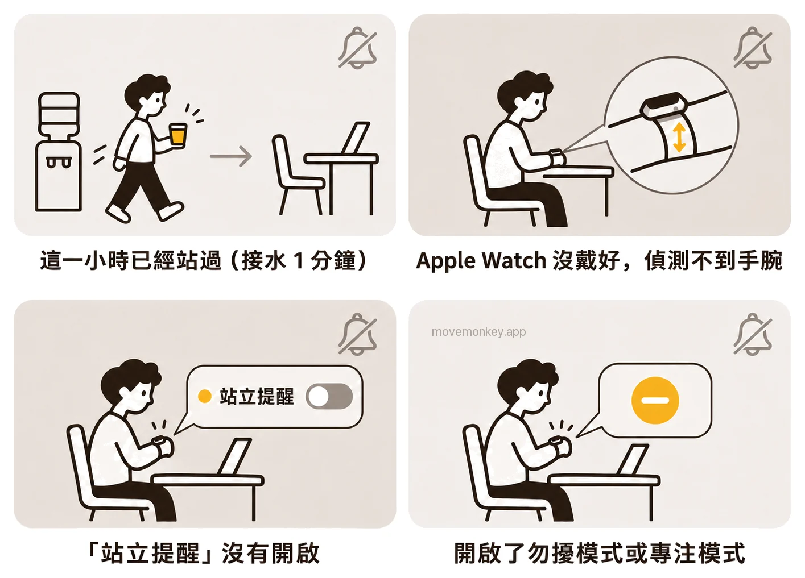
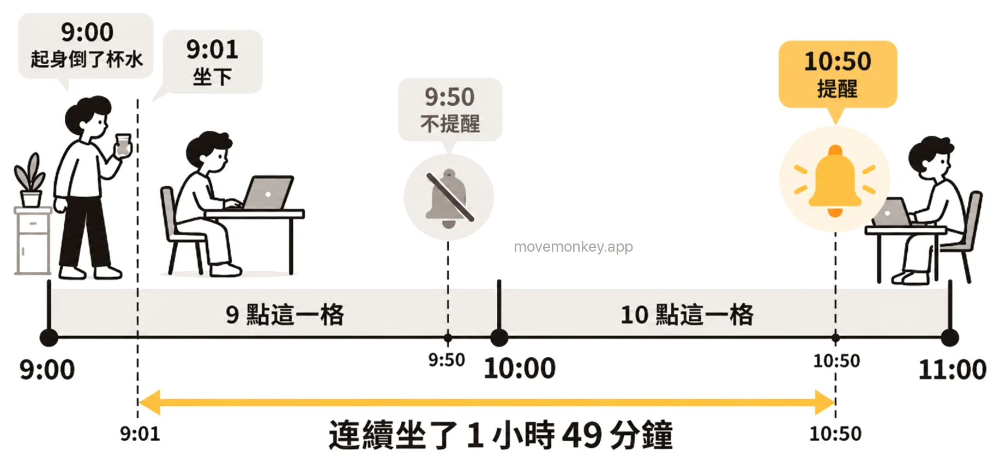

Apple Watch 站立提醒開著卻不提醒，是怎麼回事？
以下依 Apple 的說明、使用者的反映和我們的測試，列出蘋果手錶（Apple Watch）站立提醒開著卻沒有提醒的幾種原因，以及怎麼檢查。

Apple Watch 站立提醒開著卻不提醒，通常是什麼原因？
通常是因為這一小時已經算站過了，就算你只是起身裝杯水、活動了 1 分鐘。
Apple Watch 依整點一小時一小時地算站立：一小時裡站起來並活動至少 1 分鐘，這一小時就算站過，記為 1 個站立小時。[1]站立目標是一天要有幾個站立小時，可以設為 6 到 16 小時。[2]站立提醒是在這一小時還沒站過時，到第 50 分鐘提醒你。[3]
所以，連續坐了一個多小時，也可能收不到提醒：9:00 起身倒了杯水，9:01 坐下，9 點這一小時已經算站過，9:50 不會提醒；要到 10:50 才提醒，這時已經連續坐了 1 小時 49 分鐘，見 Apple Watch 站立提醒是怎麼算時間的？

如果想在連續坐久了時收到提醒，可以考慮久坐提醒 App MoveMonkey，它從你上次起身開始計時。
Apple Watch 站立提醒在哪裡開啟？
在 iPhone 上的 Apple Watch App 裡，依序點一下「我的手錶」、「App」和「活動記錄」，確認「站立提醒」已開啟。
也可以在 Apple Watch 上前往「設定」App，點一下「活動記錄」，開啟「站立提醒」。[4]
如果設定了使用輪椅，「站立」圓圈會變成「滑動」圓圈[1]，這個開關也會變成「滑動提醒」[4]。
Apple Watch 沒戴好，會收不到站立提醒嗎？
可能會。Apple 的說明：Apple Watch 無法偵測到你的手腕時，可能出現的問題包括「Apple Watch 未提醒你站立」。[5]
Apple 列出的情況包括：Apple Watch 戴得太鬆或太緊，或是和手腕之間隔著手鐲、襯衫袖子。Apple 建議調整錶帶，讓 Apple Watch 背面的感測器接觸皮膚，並說明「錶帶應舒適緊貼手腕」。[5]
開了勿擾模式、專注模式或靜音模式，Apple Watch 還會提醒站立嗎？
勿擾模式下不會提醒；靜音模式和劇院模式下沒有聲音，若允許觸覺回饋，仍會輕點手腕；專注模式下可能收不到。
Apple 把「活動記錄」提醒事項列為 Apple Watch 上的一種通知。[6]幾種靜音方式對通知的影響，Apple 的說明如下[7]：
Apple Watch 各種靜音方式下，通知的聲音、觸覺回饋和視覺通知
| 模式 | 聲音 | 觸覺回饋 | 視覺通知 |
|---|---|---|---|
| 靜音模式 | 關閉 | 開啟（若你允許） | 開啟 |
| 劇院模式 | 關閉 | 開啟（若你允許） | 關閉 |
| 勿擾模式 | 關閉 | 關閉 | 關閉 |
| 專注模式 | 關閉（你設定的例外除外） | ||
2026 年 10 月，我們在 watchOS 27.0.1 上測試：睡眠專注模式設成「允許下列通知」、名單裡只有「鬧鐘」和「睡眠」時，戴著 Apple Watch 一直坐著，到第 50 分鐘也沒有收到站立提醒；不開啟任何專注模式，同樣一直坐著，第 50 分鐘收到了站立提醒。我們還發現，站立提醒不會像其他 App 的通知那樣留在「通知中心」裡，所以被設為靜音的那次，事後也找不到。兩種設定方式的差別，見 開了睡眠模式，為什麼 Apple Watch 還有站立提醒？
Apple Watch 站立提醒太輕，沒注意到怎麼辦？
可以把觸覺回饋調強：在 Apple Watch 上前往「設定」App，點一下「音效與觸覺回饋」，把「觸覺回饋」設為「強」。[8]
也可以在 iPhone 上調整：前往 Apple Watch App，點一下「我的手錶」，然後點一下「音效與觸覺回饋」。[8]
以上都檢查過，Apple Watch 還是不提醒站立，怎麼辦？
有使用者建議把「站立提醒」關閉再開啟；也有使用者在 watchOS 26 上這樣做後，仍然收不到提醒。[9]
開關的位置見上文站立提醒在哪裡開啟。
久坐提醒 App · 現已在 App Store 推出
MoveMonkey：從上次起身開始算的久坐提醒
從你上次起身開始，坐滿你設定的時間（30、45、60 或 90 分鐘），小猴子才會提醒你。適用於 iPhone 和 Apple Watch，只用 iPhone 也可以；走動或站立後自動重新計時。
早上等你起身後才開始計時，午休可以設為不提醒，提醒時段也由你設定。
點一下「起身動動」，只要走上 1 分鐘，小猴子還會為你喝采。
核心功能永久免費，沒有廣告。
看更詳細的介紹 →